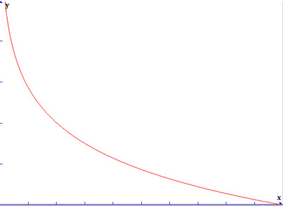
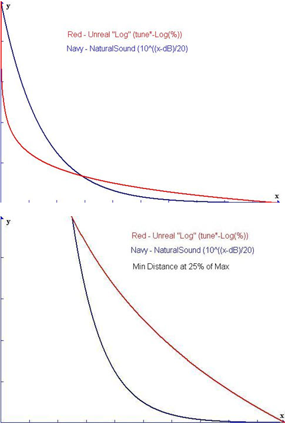

UDN
Search public documentation:
DistanceModelAttenution
日本語訳
中国翻译
한국어
Interested in the Unreal Engine?
Visit the Unreal Technology site.
Looking for jobs and company info?
Check out the Epic games site.
Questions about support via UDN?
Contact the UDN Staff
中国翻译
한국어
Interested in the Unreal Engine?
Visit the Unreal Technology site.
Looking for jobs and company info?
Check out the Epic games site.
Questions about support via UDN?
Contact the UDN Staff
UE3 Home > Audio Home > Distance Model Attenuation
Distance Model Attenuation
Overview
ATTENUATION_Linear
 Use case: Good for general looping ambience and low-detail background sounds that don't need tight 3d falloff settings. Also good for crossfading large radius ambient sounds.
Use case: Good for general looping ambience and low-detail background sounds that don't need tight 3d falloff settings. Also good for crossfading large radius ambient sounds.
ATTENUATION_Logarithmic

Use case: Good for sounds that need more exact 3d positionalization. Also good for making sounds 'pop' at a close distance; good for incoming missiles and projectiles as well.ATTENUATION_LogReverse
 Use case: Useful as a layer in weapons or other sounds that need to be loud up to their MaxRadius.
Use case: Useful as a layer in weapons or other sounds that need to be loud up to their MaxRadius.
ATTENUATION_Inverse
 Use case: Good for 3d sounds that are pinpoint loud by the MinRadius but need to be present from a distance.
Use case: Good for 3d sounds that are pinpoint loud by the MinRadius but need to be present from a distance.
ATTENUATION_NaturalSound

Use case: Good for fires or other point-interest or high frequency content that the logarithmic attenuation doesn't feel 'right' for a sound's falloff.Example of several Min/Max settings for ATTENUATION_Logarithmic
 Min 100/Max 1000:
Min 100/Max 1000:
 Min 500/Max 1000:
Min 500/Max 1000:
 Min 900/Max 1000:
Min 900/Max 1000: